Guide d'assemblage du joystick connecté
Ce guide vous explique comment assembler le joystick connecté à partir des composants électroniques, des
pièces imprimées en 3D et des pièces en contreplaqué de 5mm qui sont listées
dans la liste du matériel nécessaire (BOM).

Impression du boîtier et découpage des parties en bois
La partie bois va servir de support aux composants électroniques et à la coque en 3D.
Téléchargez les fichiers STL / DXF nécessaires poiur obtenir les pièces suivantes:
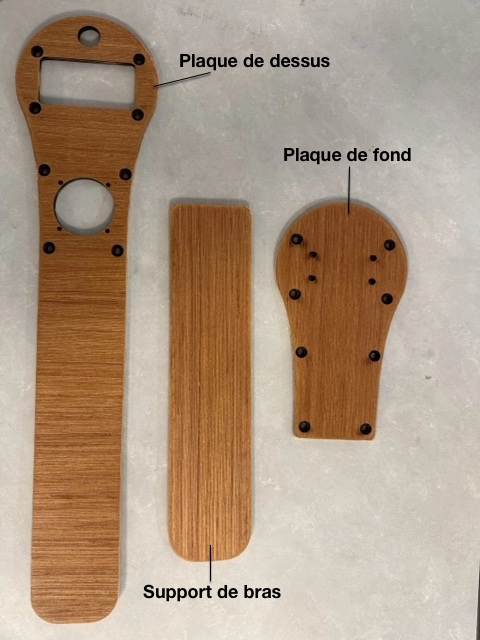
Assurez-vous d'imprimer et de découper/poncer/vernir toutes les pièces nécessaires avant de commencer l'assemblage.
Préparation des éléments électroniques et des connections
Étape 1 : Soudure des broches de la Feather
Commencez par souder les broches sur les différentes cartes pour pouvoir les empiler.
Attention : Faites attention au sens des cartes. Il y a un côté avec moins de broches. Assurez-vous de bien repérer ce côté sur la proto shield.
Feather M0 avec ses broches avant soudure :
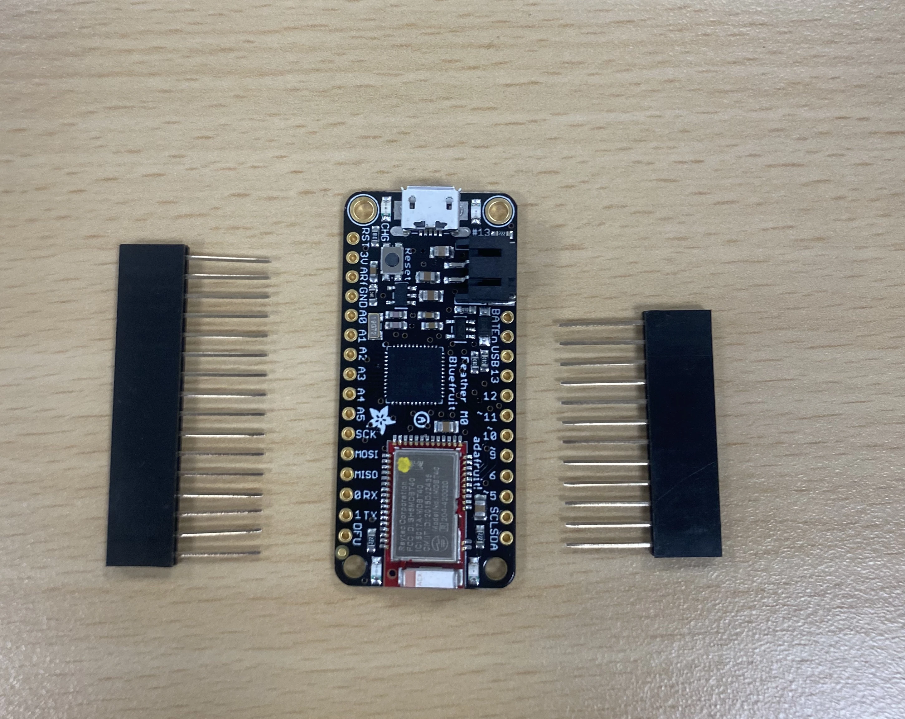
Feather M0 avec broches
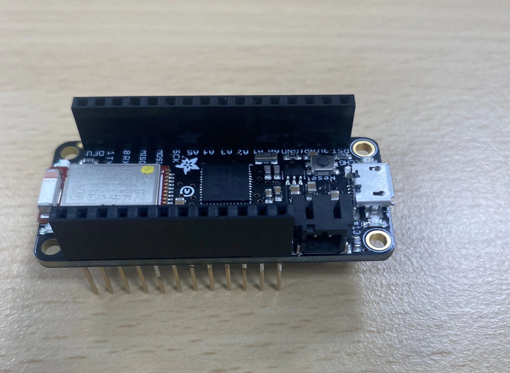
Feather M0 avec les broches soudées
Astuce : Pour souder les broches bien parallèles, retournez la carte avec les broches en place, et utilisez de la patafix pour éviter qu'elles ne bougent pendant la soudure (la photo représente sur un autre type de carte).
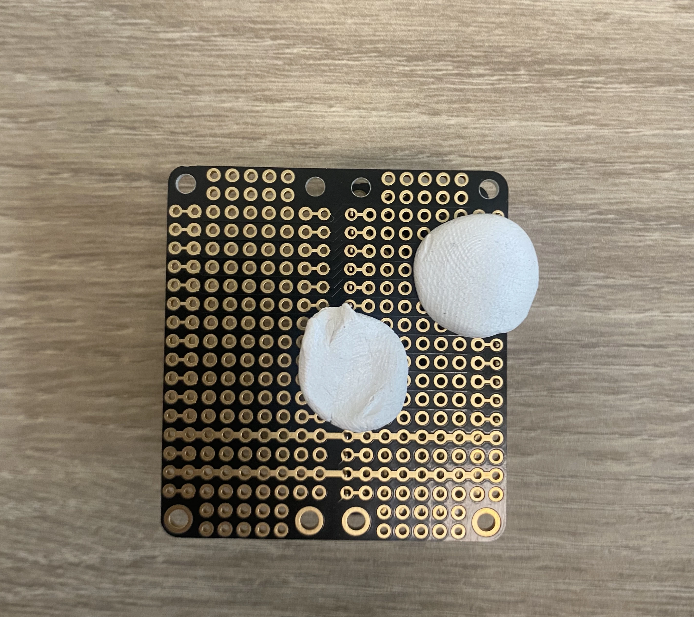
Étape 2 : Préparation du joystick
Ce joystick, de type analogique, comprend deux potentiomètres situés à angle droit,
avec chacun 3 bornes.
La borne de gauche est celle de l'alimentation (3.3V ou +),
celle de droite correspond à la masse (ou -), et celle du milieu, au signal.
Souder les broches + et -
à des câbles rouge/noir. Puis relier (soudure) les bornes + ensemble.
faire de même pour les -.
Enfin, souder les broches de signal (milieu) à des câbles de couleurs différentes.
.
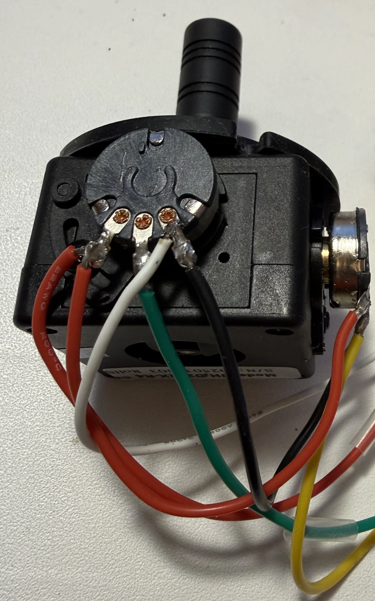
Étape 3 Soudure des câbles du joystick à la Feather:
Positionner le joystick de façon à voir un potentiomètre de face et l'autre sur le coté droit.
Souder les broches + et -
du joystick aux broches 3.3V et GND de la Feather.
Le signal de celui de face (vert) doit etre connecté (soudé)
à la broche A0 de la carte Feather.
L'autre (jaune) devra être connecté à la broche A1 de la carte.
Notez sur les images ci-dessous, l'utilsation de câbles Dupont (femelles sans la protection plastique)
pour faciliter la soudure des câbles sur les broches de la Feather.
les soudures sont ensuite assurées et isolées à l'aide de manchons thermoretractables.
Autre point, il peut être utile (pas visible sur cet exemple) de raccourcir de 2 mm les broches de la Feather.
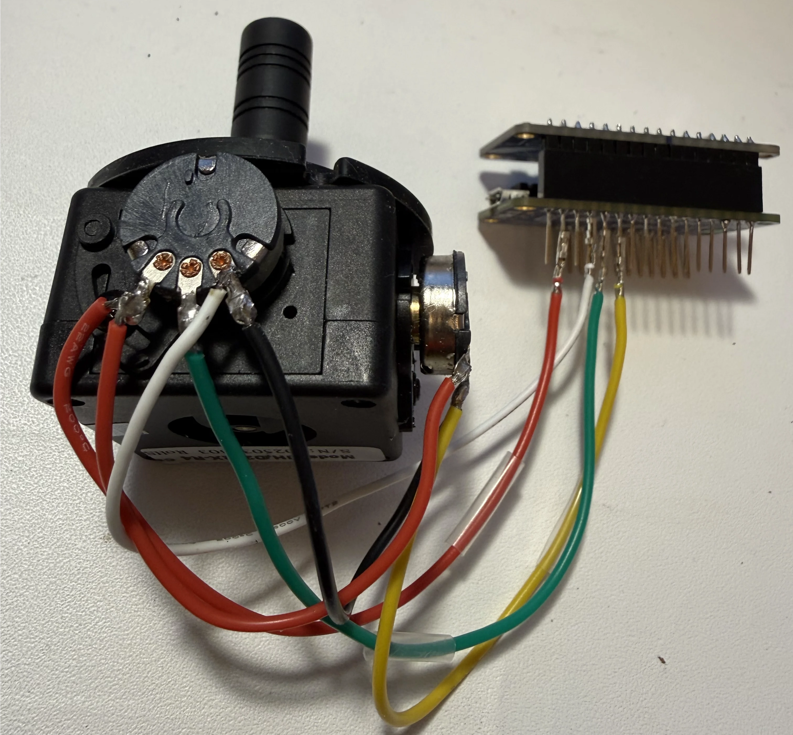
Feather M0 et joystick soudés
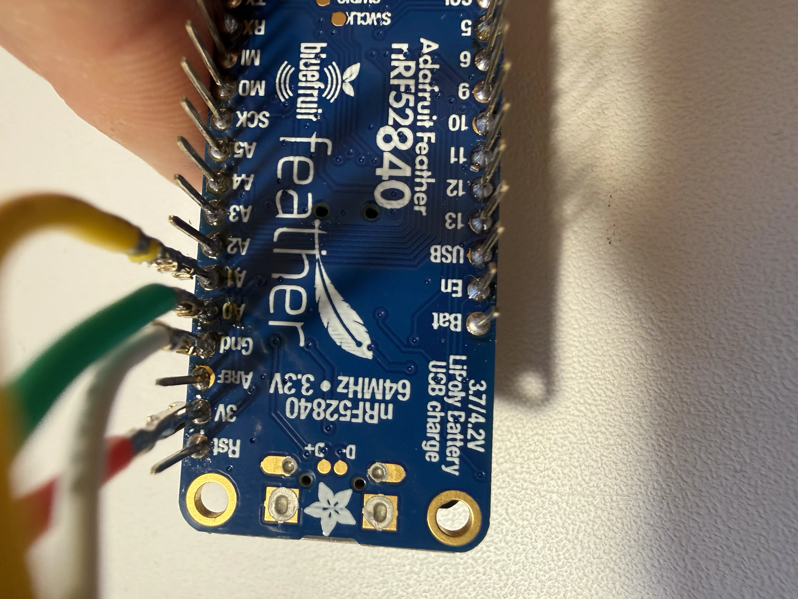
Feather M0 et joystick soudés
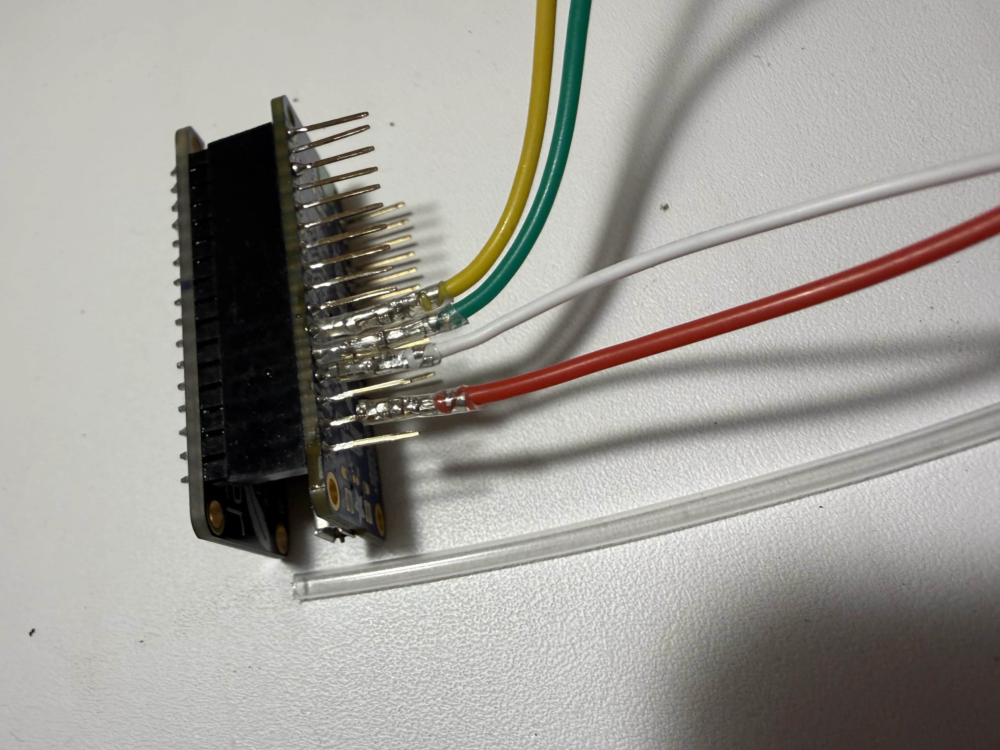
Broches de la Feather soudées avec manchons thermo-retractables
Étape 4: Préparation des connecteurs, prises et batterie
1- Préparation de la prise Usb-C
Soudez le câble rouge de la prise usb-c vissable au câble rouge
de la prise usb-micro.
Faire de même avec les câbles noirs.
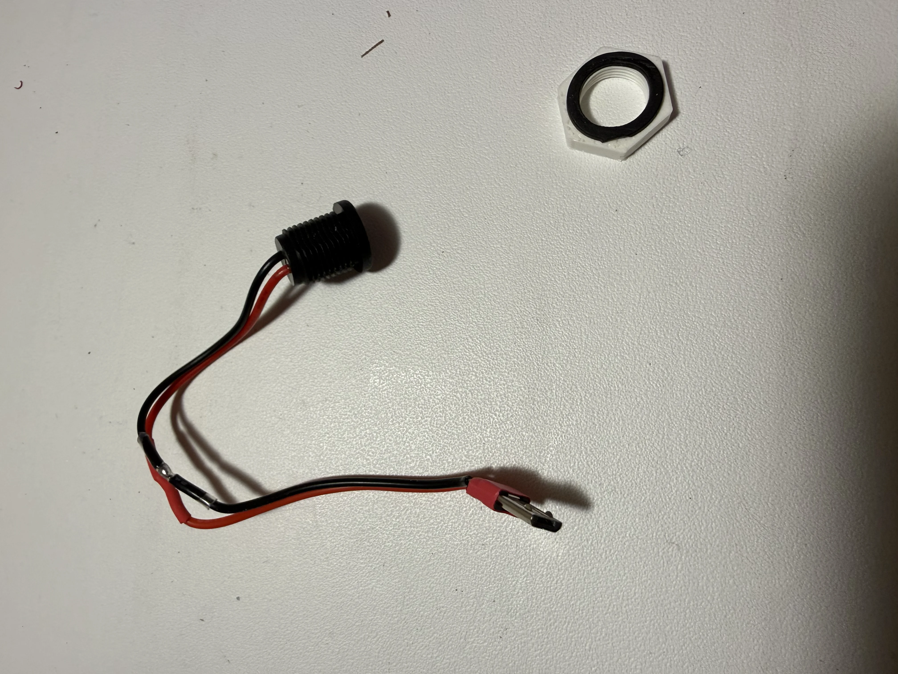
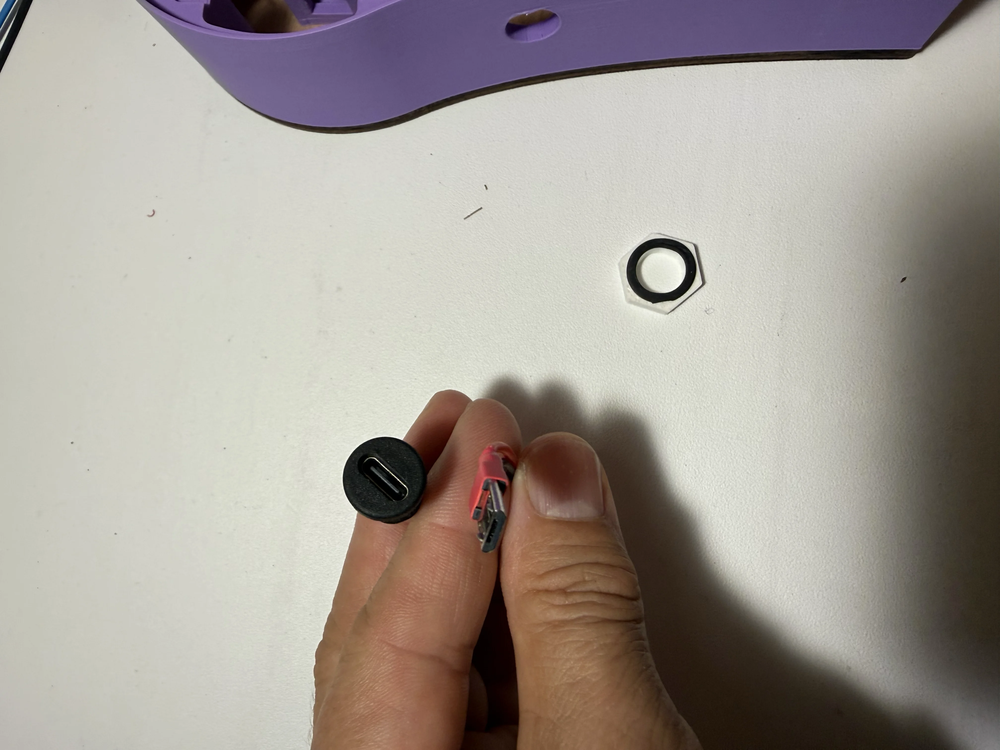
2-Dérivation du câble (JST-PH) de la batterie, pour y placer un interrupteur.
Les cartes Feather de chez Adafruit sont alimentables soit:
- par une batterie LiPo avec un connecteur JST-PH,
- via usb (micro pour les M0 et nrf52)
Si la carte est connectée à une batterie -et- à via sa prise usb, l'alimentation usb recharge la batterie.
Pour pouvoir éteindre la carte et ne pas consommer de batterie, il faut placer un interrupteur en coupure, par exemple sur le cable de masse.
Soudez le câble rouge de la prise usb-c vissable au câble rouge
de la prise usb-micro.
Faire de même avec les câbles noirs.
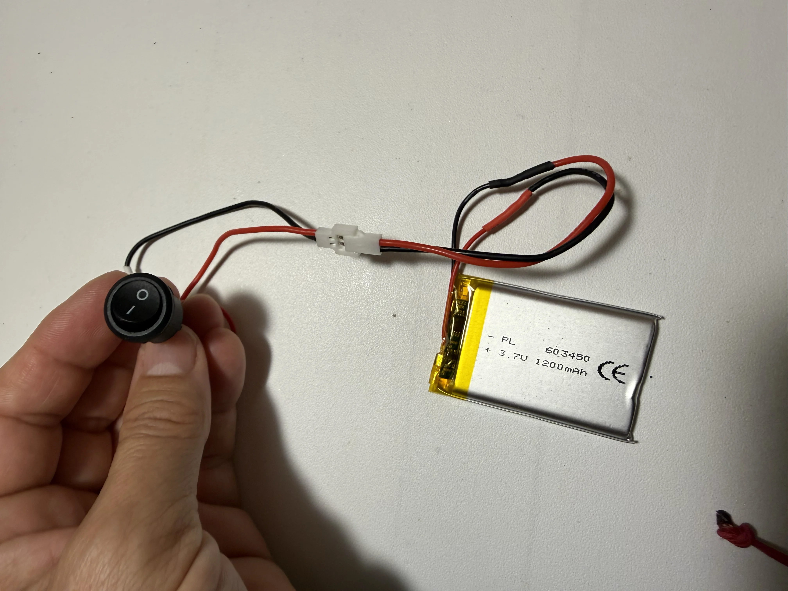
Empilage partiel
Empilage complet
De bas en haut: la proto shield, puis la Feather M0, la SD shield, et la TFT.
Installation de la connectique
Nous allons maintenant connecter les prises jack stéréo et le connecteur DB9 à la proto shield.
Connexion du DB9
Le connecteur DB9 permet de brancher un joystick ou d'autres périphériques à plusieurs entrées.
Pour le câblage du DB9, vous aurez besoin de :
- 4 fils de couleurs différentes pour deux caneaux analogiques (par exemple : les axes vertical et horizontal d'un joystick)
- 1 fil noir pour la masse (GND)
- 4 fils pour 4 contacteurs (par exemple : bouton d'un joystick)

Suivez le schéma de câblage ci-dessous pour connecter le DB9 à la proto shield :

Montage final
Une fois toutes les connexions effectuées, vous pouvez procéder au montage final dans le boîtier imprimé en 3D.
- Placez les cartes empilées dans la partie inférieure du boîtier
- Fixez les cartes avec les vis fournies
- Installez les connecteurs jack et DB9 dans leurs emplacements respectifs
- Si vous utilisez une batterie, installez-la dans le compartiment prévu à cet effet
- Fermez le boîtier avec la partie supérieure
- Vissez les deux parties du boîtier ensemble

Vue du boîtier fermé

Vue du connecteur DB9
Votre BaahBox est maintenant assemblée. Vous pouvez passer à l'installation de l'application et à la configuration de l'application.
Pour installer l'application et configurer votre BaahBox, consultez le manuel d'utilisation.